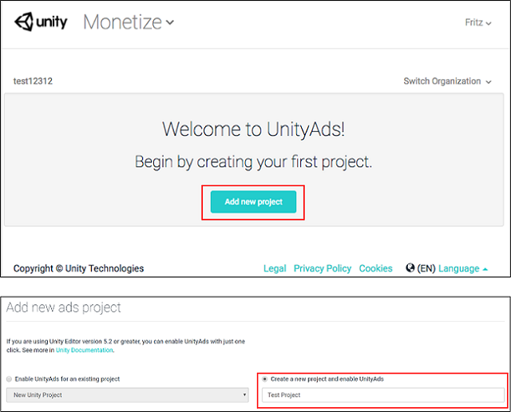
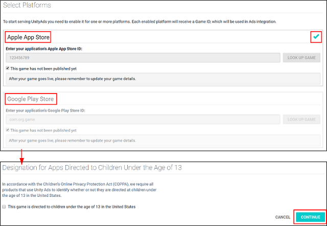

Unity Editor 集成
本指南介绍在 Unity 引擎中集成 Unity Ads 的两种方法：
- Services 窗口集成
- 资源包集成
设置编译目标
使用 Build Settings 窗口配置您的项目以便发布到受支持的平台。
将平台设置为 iOS 或 Android__，然后单击 Switch Platform__。

启用 Unity Ads 服务
根据您的集成偏好（选用 Services 窗口方法还是资源包方法），此过程略有不同。
Services 窗口方法
要启用 Ads，您需要配置项目以便使用 Unity 服务。因此必须设置 Organization__（组织）和 Project Name__（项目名称）。请参阅有关设置服务的文档。
设置好 Unity 服务后即可启用 Unity Ads：
1.在 Unity Editor 中，选择 Window > Services 以打开 Services 窗口。 2.从 Services 窗口菜单中选择 Ads。 3.单击右侧的切换开关以启用 Ads 服务（参阅下图）。 4.通过单击复选框指定您的商品是否面向 13 岁以下的儿童，然后单击 Continue。

资源包方法
在将 Ads 集成到资源包之前，您需要按如下所述方式创建 Unity Ads 游戏 ID (Unity Ads Game ID)。
创建 Unity Ads Game ID
1.在 Web 浏览器中，使用您的 Unity Developer Network UDN 帐户导航至 Unity Ads Dashboard，然后选择 Add new project。

2.选择适用平台（iOS 和/或 Android）。

3.找到特定于平台的 Game ID，并复制该 ID 供稍后使用。
将 Ads 集成到资源包
1.在脚本的头部声明 Unity Ads 命名空间 UnityEngine.Advertisements（请参阅 UnityEngine.Advertisements 文档）：
```
using UnityEngine.Advertisements;
```
-
Inititalize Unity Ads early in the game’s runtime lifecycle, preferably at launch, using the copied Game ID string,
gameId:Advertisement.Initialize(string gameId)
显示广告
启用服务后，您可以在任何脚本中实现代码来显示广告。
1.在脚本的头部声明 Unity Ads 命名空间 UnityEngine.Advertisement（请参阅 UnityEngine.Advertisements 文档）：
```
using UnityEngine.Advertisements;
```
2.调用 Show() 函数以显示广告：
```
Advertisement.Show()
```
对观看广告的玩家进行奖励
对观看广告的玩家进行奖励可以增加用户参与度，从而带来更高收入。例如，游戏可以用游戏币、消耗品、额外生命数量或经验倍增法宝来奖励玩家。
要对看完视频广告的玩家进行奖励，请使用以下示例中的 HandleShowResult 回调方法。务必确保 result 等于 ShowResult.Finished 来确认用户未跳过广告。
1.在脚本中添加一个回调方法。
2.调用 Show() 时，将此方法作为参数传递。
3.调用具有 "rewardedVideo" 广告位的 Show() 函数，使该视频无法跳过。
注意：请参阅 Unity Ads 文档以了解有关 placements 的更多详细信息。
void ShowRewardedVideo ()
{
var options = new ShowOptions();
options.resultCallback = HandleShowResult;
Advertisement.Show("rewardedVideo", options);
}
void HandleShowResult (ShowResult result)
{
if(result == ShowResult.Finished) {
Debug.Log("Video completed - Offer a reward to the player");
// 在此处奖励您的玩家。
}else if(result == ShowResult.Skipped) {
Debug.LogWarning("Video was skipped - Do NOT reward the player");
}else if(result == ShowResult.Failed) {
Debug.LogError("Video failed to show");
}
}
奖励广告按钮代码示例
使用以下代码来创建奖励广告按钮。只要有广告，就会在按下广告按钮时展示广告。
1.选择 Game Object > UI > Button__，将按钮添加到您的场景。
2.选择添加到场景中的按钮，然后使用 Inspector 为其添加脚本组件。（在 Inspector 中，选择 Add Component__ > New Script。）
3.打开脚本，然后添加以下代码：
注意：特定于资源包集成的两段代码已通过注释标注出来。
```
using UnityEngine;
using UnityEngine.UI;
using UnityEngine.Advertisements;
//---------- 以下代码仅用于资源包集成：----------//
#if UNITY_IOS
private string gameId = "1486551";
#elif UNITY_ANDROID
private string gameId = "1486550";
#endif
//-------------------------------------------------------------------//
ColorBlock newColorBlock = new ColorBlock();
public Color green = new Color(0.1F, 0.8F, 0.1F, 1.0F);
[RequireComponent(typeof(Button))]
public class UnityAdsButton : MonoBehaviour
{
Button m_Button;
public string placementId = "rewardedVideo";
void Start ()
{
m_Button = GetComponent<Button>();
if (m_Button) m_Button.onClick.AddListener(ShowAd);
if (Advertisement.isSupported) {
Advertisement.Initialize (gameId, true);
}
//---------- 以下代码仅用于资源包集成：----------//
if (Advertisement.isSupported) {
Advertisement.Initialize (gameId, true);
}
//-------------------------------------------------------------------//
}
void Update ()
{
if (m_Button) m_Button.interactable = Advertisement.IsReady(placementId);
}
void ShowAd ()
{
var options = new ShowOptions();
options.resultCallback = HandleShowResult;
Advertisement.Show(placementId, options);
}
void HandleShowResult (ShowResult result)
{
if(result == ShowResult.Finished) {
Debug.Log("Video completed - Offer a reward to the player");
}else if(result == ShowResult.Skipped) {
Debug.LogWarning("Video was skipped - Do NOT reward the player");
}else if(result == ShowResult.Failed) {
Debug.LogError("Video failed to show");
}
}
}
}
```
4.按下 Unity Editor 中的 Play 以测试广告按钮集成是否成功。
如需进一步的帮助，请参阅 Unity Ads 论坛。
在 Ads Dashboard 中管理设置
使用设置来修改项目中的广告位和其他特定于游戏的设置。（请参阅 Unity Ads 文档以了解有关广告位的更多信息。）
1.在 Web 浏览器中，使用您的 Unity Developer Network UDN 帐户导航至 Unity Ads Dashboard，然后找到您的游戏项目。

2.选择适用平台（iOS 或 Android）。

3.选择广告位。（请参阅 Unity Ads 文档。）

- 2017–08–25 Page published with editorial review